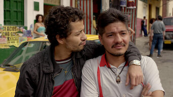

Capítulo 1: Por fin libre

Pablo Escobar ha escapado de La Catedral y se encuentra en fuga. El gobierno colombiano intensifica sus esfuerzos para capturarlo, mientras Escobar se enfrenta a desafíos dentro y fuera de su organización.